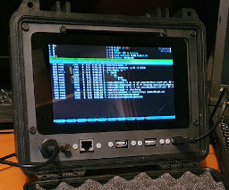
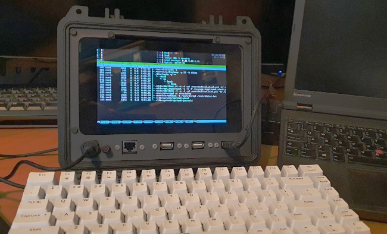
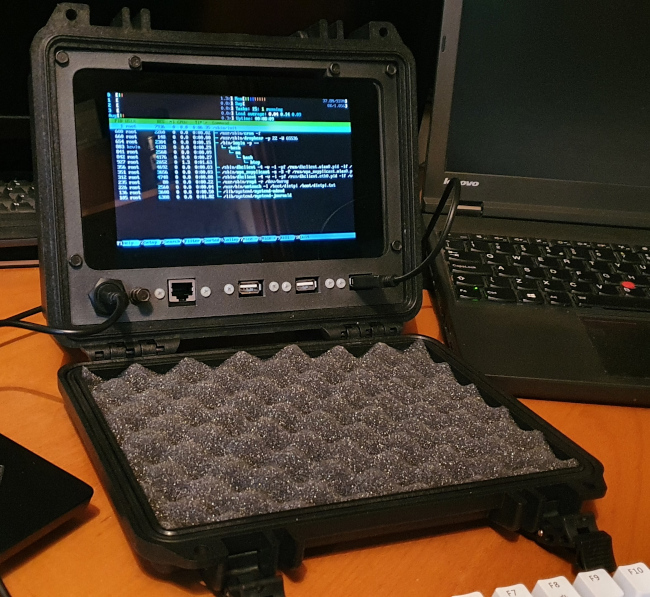
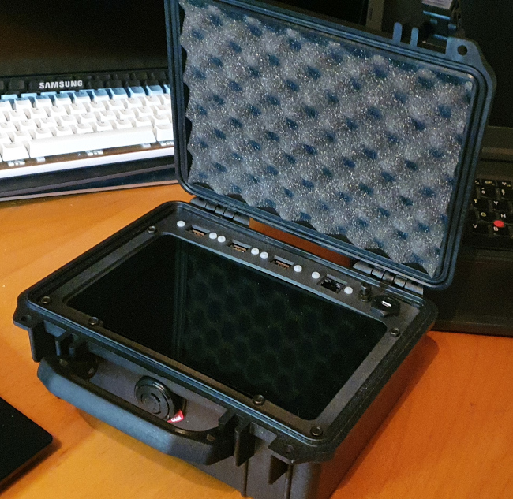
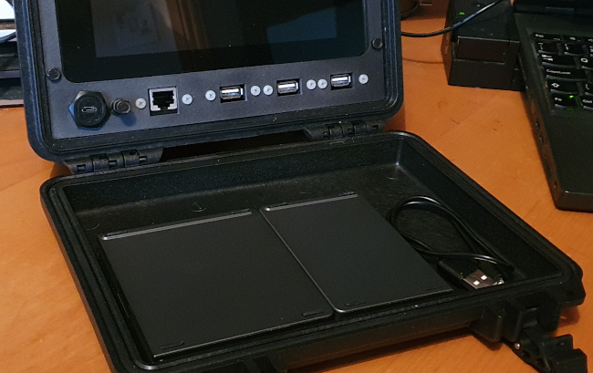
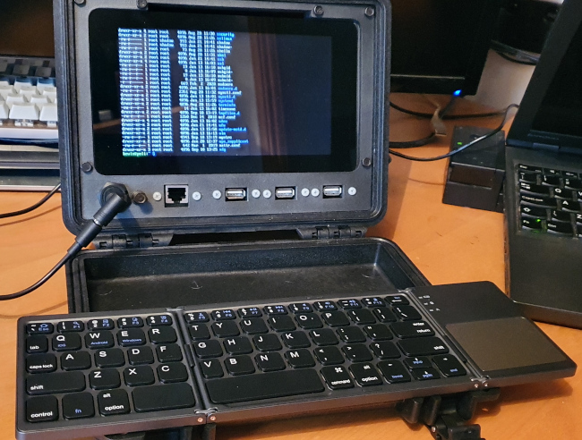

Peli "Protector" case as a rugged enclosure for a Raspberry Pi-based field terminal
 I'd been thinking for a while that a Peli "Protector" case would make a good enclosure for a field terminal based on a Raspberry Pi and a touchscreen. The applications I have in mind include inspecting recordings from my trail cameras. These cameras are installed in wet, muddy locations with no mains electricity supply. I'm more familiar with Peli cases for transporting camera equipment -- they're unremarkable in appearance, but extremely robust. They're also reasonably waterproof. They do have the disadvantage of being very expensive, compared to similar-looking brands, but I guess quality comes at a price.
As it happens, I didn't have to design anything myself, because I found a published design on Jay Doscher's website. This design is based on the Peli 1150 case, and a Raspberry Pi official 7" touchscreen. The front panel connections are formed from readily-available (but not cheap) panel-mount extension cables.
Jay helpfully provides STL files ready for the 3D printer (thanks).
My build was delayed because, as I don't own a diamond mine, I had to wait for a second-hand Peli 1150 to become available on eBay. This article recounts my experience of assembling a Pi terminal from Jay's design, and some comments on using this kind of case in general.

Printing
The whole design is centered on the front panel -- this holds the touchscreen, which has the Raspberry Pi mounted on its back. The front Panel is printed in three parts -- the visible panel, and two brackets for attaching the touchscreen behind it. I printed the front panel parts in carbon-reinforced nylon PA12, with no problems. The print is almost two-dimensional, so there's not a lot that can go wrong. The substrate has a gritty, industrial look, which complements the matte-black case. I thought it would be stiffer than cheaper substrates, and it is -- but perhaps not quite stiff enough. If I were doing this again, I think I'd add a millimetre or so to the thickness of the front panel. It would add to the cost, of course, but only slightly. I don't think it would be necessary to change the shape of the front panel, to accommodate this extra thickness.
The slight flexibility of the front panel is noticeable because the glass of the touchscreen is, of course, not flexible at all. So, when the unit is assembled, there's a small (perhaps 0.5mm) lip between the front panel and the bottom of the touchscreen glass. The touchscreen is not fastened to this panel, so I don't think that thickening the panel would put any extra stress on the screen glass.
I should point out that the slight lack of stiffness doesn't affect the operation of the unit once assembled.
Assembly
I used this panel mount Ethernet extension and this panel mount USB extension to bring the Pi Ethernet and USB to the front panel. On Jay's website he shows the use of a straight Ethernet extension, but I could only find a right-angle one. The right angle is at the Pi end, and causes the Ethernet cable to obstruct access to the USB ports. I didn't think this would be a problem, because I was planning to use only two of the USB ports, and use the third front-panel cut-out for an HDMI port. As it turns out, though, there wasn't room behind or below the Pi board to route the HDMI cable. In the end I managed to get three USB cables and the Ethernet cable into the Pi's sockets, but it wasn't easy, and I'm not entirely happy with the result. It's definitely better to get the straight Ethernet adapter, if possible.
The biggest problem I had was in attaching the touchscreen to the front panel. This is done using two brackets which, because of their thickness, have a small amount of flex in them. The flex here is probably a good thing, because it prevents shocks to the case being transmitted directly to the touchscreen glass. The attachment is fussy though and, although it probably is possible to obtain a self-tapping screw that would attach the brackets to the front panel, I did not have one. So in the end I drilled through the front panel and attached the brackets to the front panel using black M4 nuts and bolts. This is a very sturdy fastening, and adds to the industrial look of the build.
I found it quite difficult to centre the touchscreen in the opening in the front panel -- I never got it perfectly right. I don't think this is a fault in the 3D printing -- I think the touchscreen has its mounting holes a millimetre or so off-centre. Whether all the official 7" touchscreens are like this, or its a fault in mine, I really couldn't say. In any event, the discrepancy is not noticeable, because I decided to support the back of the touchscreen glass using a bead of foam-rubber attached to the cut-out in the front panel. Although the semi-rigid mount of the screen on the front panel might add to shock resistance, I'm worried that I could press hard on the sides of the touchscreen, and accidentally break it, because of the lack of support at the back. The foam bead provides just enough cushioning to prevent this, while not anchoring the screen rigidly to the panel. The foam bead also has the effect of masking the millimetre gap between the touchscreen glass and the panel.

The front panel forms a completely self-contained unit, and no connections need to be made to the case itself. The panel just slides into the case -- but it's an extremely tight fit. It has to be, otherwise the panel assembly would fall out. The design doesn't call for any fastenings between the case and the front panel -- it's just a friction fit. The fit is tight enough that this does kind-of work. It wouldn't be hard to make a rigid fastening by putting some fine self-tapping screws through the case and into the front panel. Unfortunately, there's a lip around the case at the relevant place that would make it hard to do this without compromising the waterproofing.
The front-panel design leaves a 4mm hole, which will accommodate a nut-and-bolt arrangement that stands proud of the panel. This is to yank the panel out of the case -- and you'll need it, because the fit is so tight.
To be honest, I'm unsure what I think about friction-fitting the panel into the case like this. It does work, but I suspect that if the case were dropped, the whole panel could be jolted loose.

Operation
The final build seems pretty solid, and works well out-of-doors when powered from a car battery via a 12v-5v converter. The unit draws as much as 2.5A with the screen backlight turned up, so you need a more substantial converter than the cheap nasty ones that are sold as phone chargers.
My main concern about a build like this is ventilation -- that is, the lack of it. There's s small slot above the touchscreen which seems to be the only place where air can enter or leave the assembly. Any other heat loss would have to be by conduction through the case. Of course, passive ventilation could be improved by drilling ventilation holes in the case, but it would be difficult to do that without compromising the waterproofing.
I find that, under full load with the screen backlight on, the CPU temperature increases by about 35 Celsius. With English weather, this isn't often going to be a severe problem. In a place where the ambient temperature can exceed 40 Celsius, you might have to be a bit careful. There's really no scope to provide extra ventilation, active or passive, without puncturing the case.


On the subject of waterproofing, I should point out that the finished build is at best slightly splash-proof when the case is open. It would be very easy to improve the waterproofing when open -- ten minutes with a mastic gun would make it fully submersible. However, opening the unit for maintenance would become very problematic, and ventilation would be further reduced.
I'd like to build a custom keyboard that will fit in the lid of the Peli case when it's open, but there's really not a lot of space to play with. Something like the Gherkin 30% keyboard would fit side-to-side (just), but it would be too tall. In fact, the depth of the lid is only just a little larger than a conventional keycap.
Although it's not ideal a cheap, folding Bluetooth keyboard fits comfortably side-to-side, and just fits in height. When the case is closed, there's just enough clearance to fit a 2mm-thick sheet of foam between the folded keyboard and the touchscreen; but that's enough to stop the screen getting scratched.
Further work
It would significantly increase the usefulness of the unit if it could be battery-powered. There's just room, I think, for a charging circuit and battery in the case -- but it would be a tight squeeze, and you'd need to fabricate some mounting brackets for the parts. What puts me off pursuing this further is that my experience is that NiMH batteries and their chargers tend to get rather hot in use; I'm not convinced that the case offers enough ventilation. You'd also have to fit a substantial power switch on the front panel somewhere. Connections to at least some of the GPIO pins would also be useful in some applications. Jay Doscher's website also shows some designs for larger units, and these might be more appropriate if you want battery power and external connections to the GPIO.
Closing remarks
This isn't a cheap build -- even leaving aside the Peli case, the cost of parts is about £150. However, I don't think anything remotely like it is available outside the specialist industrial computing market, where it would be hugely more expensive.